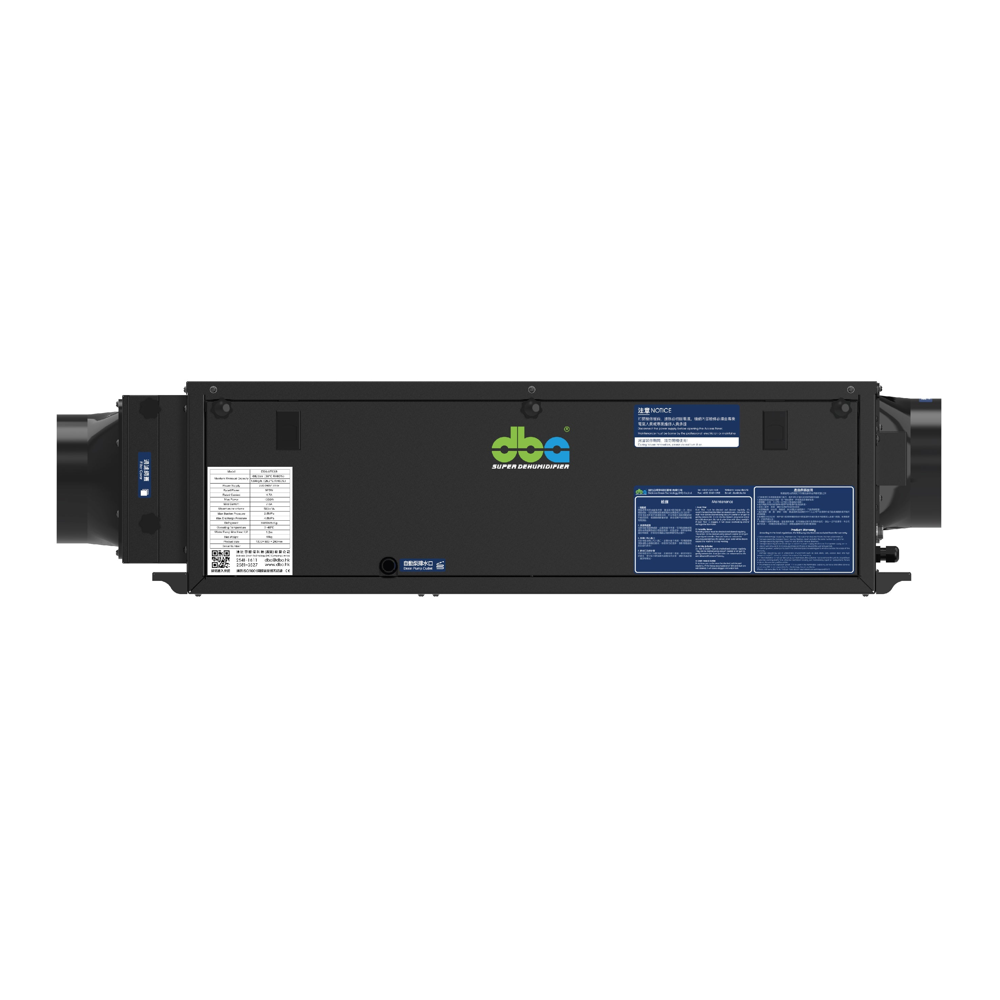

潮濕香港氣候下之保養維護日程。 A maintenance schedule for humid Hong Kong.
香港全年平均相對濕度為 78%,潮濕季節持續長達 5 個月。本地之天花式抽濕機每日運轉時數達 18 至 22 小時,使用強度為歐美同類項目之兩倍。保養日程必須依照香港氣候特性予以校準。 HK averages 78% RH year-round, with 5 months of peak humidity. Ceiling dehumidifiers here run 18–22 hours a day — double the duty of comparable installs in Europe or the US. The maintenance schedule needs to match.

每月例行檢查(約 5 分鐘)
- 檢查回風濾網 — 拆卸濾網後,以吸塵機抽吸或以清水沖洗,完全晾乾後重新裝回。香港室內微塵與廚房油煙之雙重影響下,濾網每兩個月即會出現明顯色澤變化。受堵之濾網將降低風量及除濕效能,並增加耗電量
- 檢查水盤及排水終點 — 透過檢修口觀察水盤內部,確認無積水滯留;繼而前往排水終點,確認有正常水流排出
- 擦拭壁掛式濕度感應器 — 以乾燥軟布擦除表面塵埃,切勿使用噴霧或濕布。長期累積之塵埃會導致感應器讀數產生 3% 至 5% RH 之偏差
每季維護工作(約 30 分鐘)
- 清潔冷凝器與蒸發器盤管 — 拆下機底檢修面板,以軟毛刷及吸塵機輕掃散熱鰭片。商用機型可採用盤管專用清潔劑進行泡沫噴灑後沖洗。香港室外懸浮微粒結合潮濕盤管之環境,於半年內即會於鰭片表面形成隔熱層,致使除濕能力下降 20% 至 30%
- 沖洗冷凝水排放管 — 自水盤檢修口注入 500 ml 溫水並加入數滴稀釋漂白水,以消除管路內之生物膜
- 檢查風管接駁處 — 特別注意軟管接駁位置,輕推每處鋁箔膠帶,如發現鬆動須即時重新密封
- 更換 HEPA 濾芯(GEC V 系列專用) — H13 級 HEPA 於香港空氣品質環境下,每 3 至 4 個月須予以更換。此為新風機型獨有之維護項目
年度維護工作(約 60 分鐘,一般由專業技術人員執行)
- 更換 UV-C 紫外線殺菌燈 — 有效使用壽命約為 9,000 小時,相當於一年連續運轉時數。逾期使用之燈管雖仍可發光,惟殺菌效力將顯著下降
- 校準濕度感應器 — 將精度經過認證之手提式濕度計與壁掛式感應器並列放置一小時。如偏差超過 3% RH,須進行校準或予以更換
- 檢查內置水泵狀況 — 仔細聆聽水泵運轉聲響。若聲音沉重或運轉時間過長,代表已出現磨損,應進行預防性更換
- 緊固電氣接線端子 — 熱循環會逐漸導致螺絲鬆脫。每年以扭力起子進行一次檢查,可預防 5 年後可能出現之接觸不良故障

香港氣候特有之注意事項
- 回南天(2 月至 4 月) — 機身運轉時數驟增,濾網會於 3 至 4 週內出現明顯髒污,建議於此期間增加檢查頻率
- 颱風季節(7 月至 10 月) — 颱風前後可暫時停用新風功能,以避免吸入含鹽分之海風造成盤管腐蝕
- 農曆新年(1 月至 2 月) — 大掃除後室內微塵濃度大幅上升,新年後之首次保養應提前進行
超出維護週期之徵兆
- 機身持續運轉,惟室內相對濕度仍較設定值高出 5% 至 10%
- 送風口附近散發輕微霉味
- 機身停機後仍可聽見水滴落下之聲響
- 假天花附近出現圓形之水漬痕跡
- 壓縮機啟停頻率異常(例如每 30 秒啟停一次)
以上任何徵兆出現,即表示須提前安排下一次保養。
簡易記憶口訣
每月清潔濾網。每季沖洗排水。每年更換 UV-C 燈管。
新風機型額外:每 3 至 4 個月更換 HEPA 濾芯。
將此排程加入日曆提醒,日常執行便可形成習慣。
ERV.hk 為香港住宅及商業客戶提供年度及半年制之保養維護合約服務,歡迎聯絡本公司了解詳情。
Monthly (5 minutes)
- Check the return-air filter. Pull it out, vacuum or rinse, dry, reinstall. HK indoor dust plus kitchen oil mist colours the filter in 2 months. A blocked filter cuts airflow, cuts capacity, and pushes runtime — a feedback loop that ends in a tripped unit
- Check the drain pan and destination. Look into the pan through the access port — no standing water. Then walk to the drain destination and confirm water is moving
- Wipe the wall humidity sensor. Soft cloth only; no spray, no wet cloth. A year of dust drifts the reading 3–5% RH
Quarterly (30 minutes)
- Clean the evaporator and condenser coils. Drop the bottom access panel and brush-vacuum gently. Commercial sites can use a coil-safe foam cleaner. HK outdoor particulates plus a wet coil build an insulating layer in 6 months that drops capacity 20–30%
- Flush the drain line. 500 ml of warm water with a drop of dilute bleach via the test port. Kills the biofilm in horizontal sections
- Check duct joints. Especially flex tape joints — gently push each one. Reseal anything loose
- Replace HEPA (GEC V range only). H13 HEPA in HK air quality needs replacement every 3–4 months. Unique to fresh-air systems
Annually (60 minutes, usually a technician visit)
- Replace the UV-C lamp. Useful service life ≈ 9,000 hours, or one year of continuous use. Beyond that it still glows but loses germicidal effect
- Recalibrate humidity sensor. Place a calibrated hand-held hygrometer next to the wall sensor for an hour. Drift > 3% RH = recalibrate or replace
- Inspect the internal pump. Listen to it cycle. Laboured or prolonged cycles = preventive replacement before failure
- Tighten electrical terminals. Thermal cycling loosens screws over years. One torque-screwdriver pass prevents the slow-burn faults that appear at year 5
HK climate-specific notes
- 'Wui naam tin' (Feb–Apr): runtime spikes, filters foul in 3–4 weeks. Add an extra inspection
- Typhoon season (Jul–Oct): consider pausing fresh-air mode pre- and post-typhoon to avoid drawing salty marine air across the coil
- Lunar New Year cleaning (Jan–Feb): household dust spikes; bring forward the post-CNY maintenance
Signs you waited too long
- Unit runs continuously but room sits 5–10% RH above setpoint
- Faint musty smell from the supply grille
- Water dripping audible when the unit is off
- Circular water stain on a ceiling tile near the unit
- Compressor short-cycles (30 sec on / 30 sec off)
Any of these = do the next month's maintenance now, not later.
The short version
Filter monthly. Drain quarterly. UV-C annually.
Fresh-air units: HEPA every 3–4 months.
Set it on the calendar — the rest is muscle memory.
ERV.hk offers annual and biannual maintenance contracts for HK residential and commercial customers. Contact us for details.
保養合約Maintenance contract
將保養工作交由專業團隊執行。Outsource the schedule.
本公司提供年度及半年制之上門保養服務。請提供機型及地址資料以供安排。Annual or biannual on-site visits. Send us your model and address.
免費諮詢Request a quote